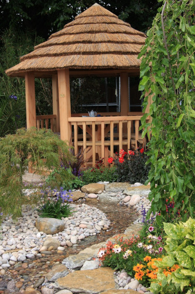
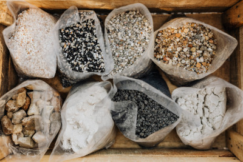

Descubra uma beleza natural que transformará o seu jardim em um verdadeiro paraíso. Apresentamos a você a Andramar, a principal empresa especializada em pedras decorativas para o seu espaço exterior.
Deixe seu jardim mais bonito

Se você procura dar um toque especial e único ao seu jardim, as pedras decorativas da Andramar são a escolha perfeita. Com uma ampla variedade de pedras de diferentes tamanhos, cores e texturas, temos tudo o que você precisa para criar um ambiente encantador.

Se você deseja criar um caminho sinuoso, destacar áreas de destaque em seu jardim ou até mesmo construir um lindo jardim de pedras, a Andramar tem as soluções perfeitas para você. Nossos especialistas estão à disposição para orientá-lo na escolha das melhores pedras de acordo com suas preferências e necessidades.